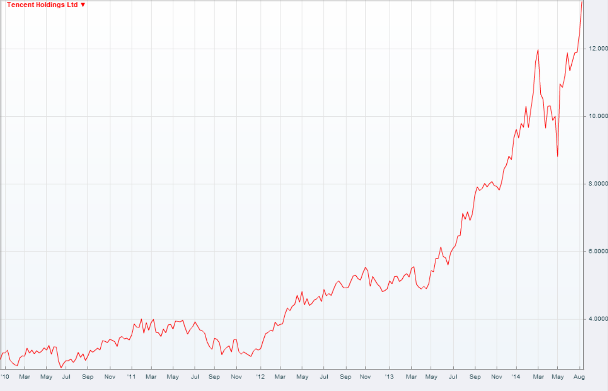
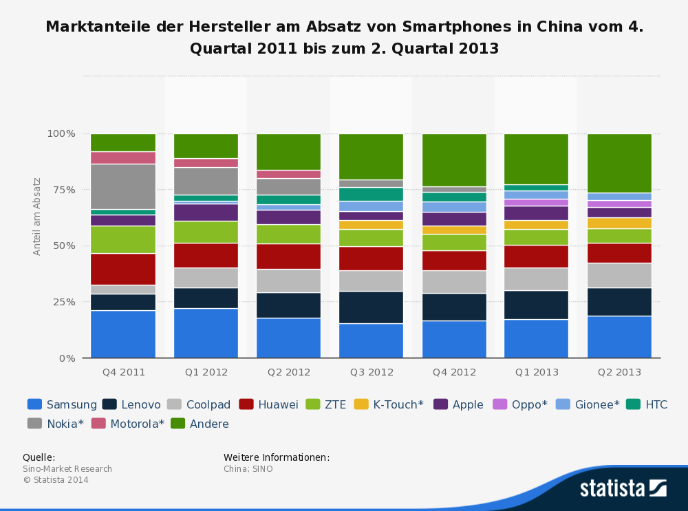
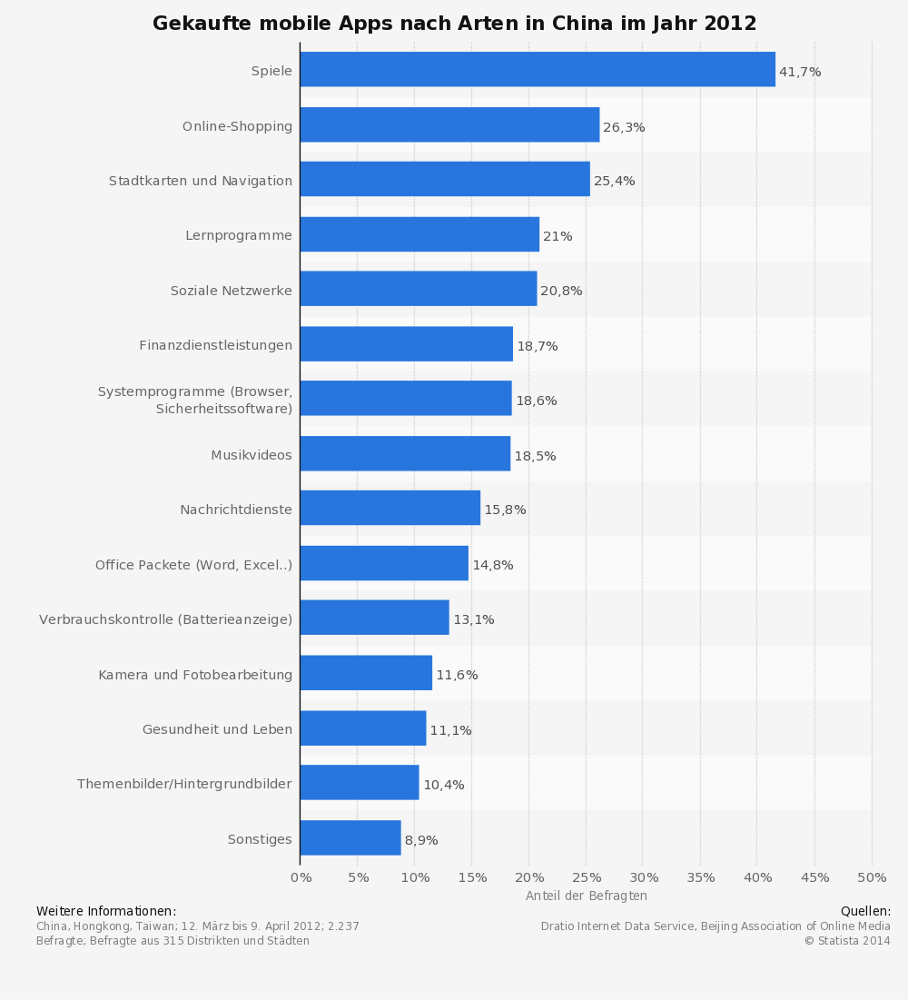
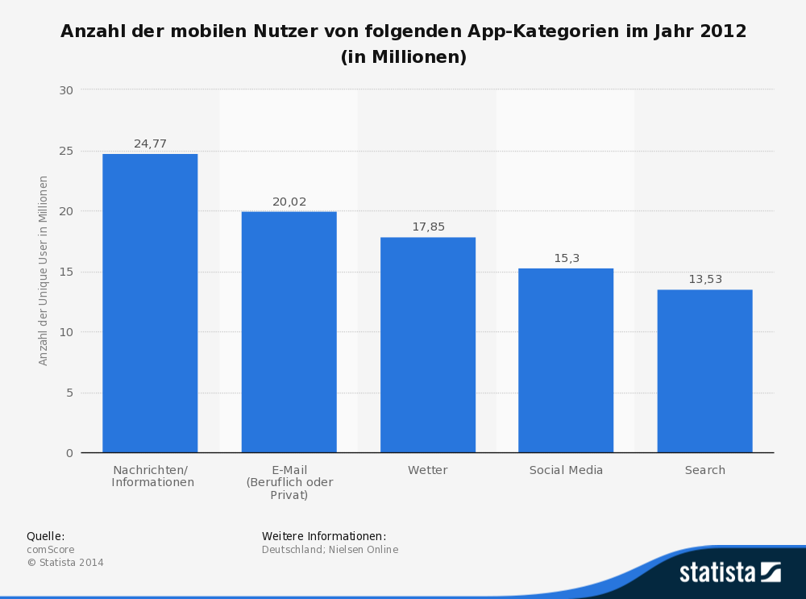
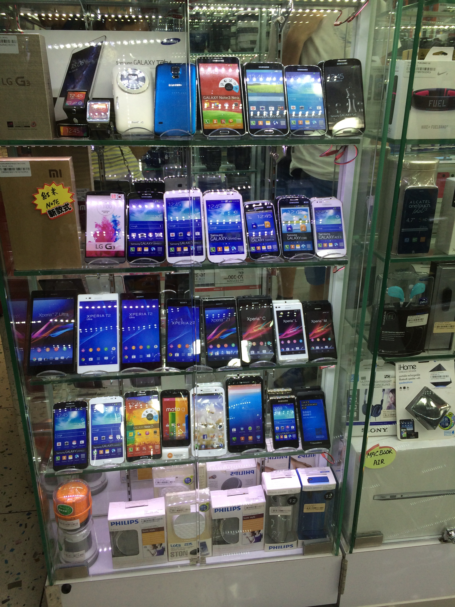
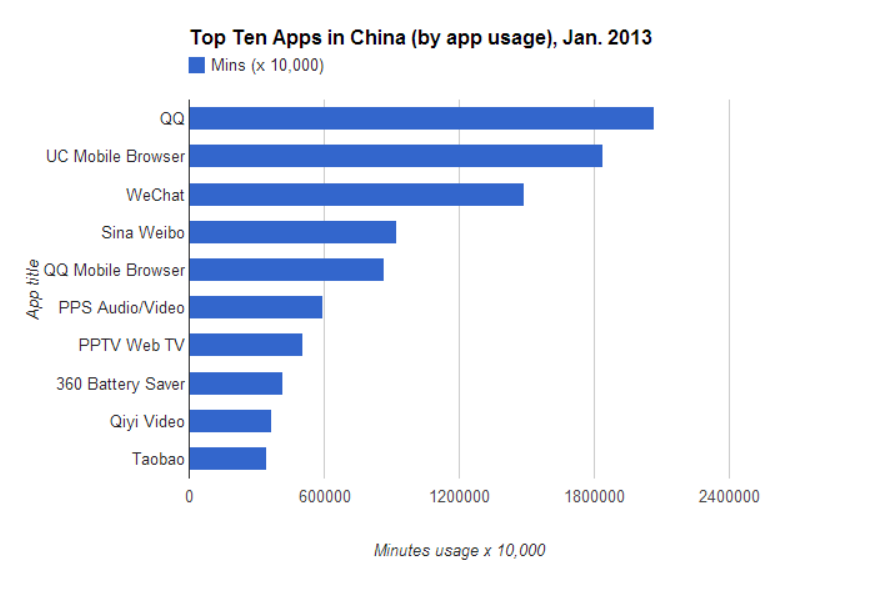

Importance and usage of
smartphones
in China Florian Dorschel, Jannis Huebl, Wanping Qu, Philipp Walter, Murat Yildiz
Agenda
- Importance
- Usage
- Generations
- Charts and Facts
More than one smartphone
Access the Internet more often with smartphone than PC (83, 4%)
Users of classical social network declined by 7,4% in last six month

WhatsApp and Facebook in ONE app

- Apps for buying Coupons
- Allow a discount for almost everything
- Read books
- Pay bills
- Online shopping
- Taobao (branded products for less money)
Adolescents use smartphones to..
- Play Games
- Show off with their iPhone
- Call mom and dad for news at school
- Chat
- Post news
Students use smartphones to..
- Manage University documents
- Timetable
- Location plan for the campus
- Chat
- Post news
- Take "cute" photos
Adults use smartphones to..
- Play games
- Watch TV-shows
- Different flat rates
- One flat rate for family
- Quick dialing
- Chat with family and friends
- Post news about them and their family
In businesses smartphones are used to..
- Time scheduling
- One smartphone for business (customers, business partner)
- One smartphone for family
- Quick dialing
- Always newest smartphone
- Brands are very important
Elderly population use smartphones to..
- Play
- Watch TV-shows
- Take photos
- nevertheless they don't really know how to handle the smartphone





